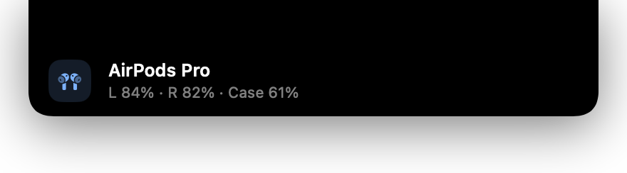
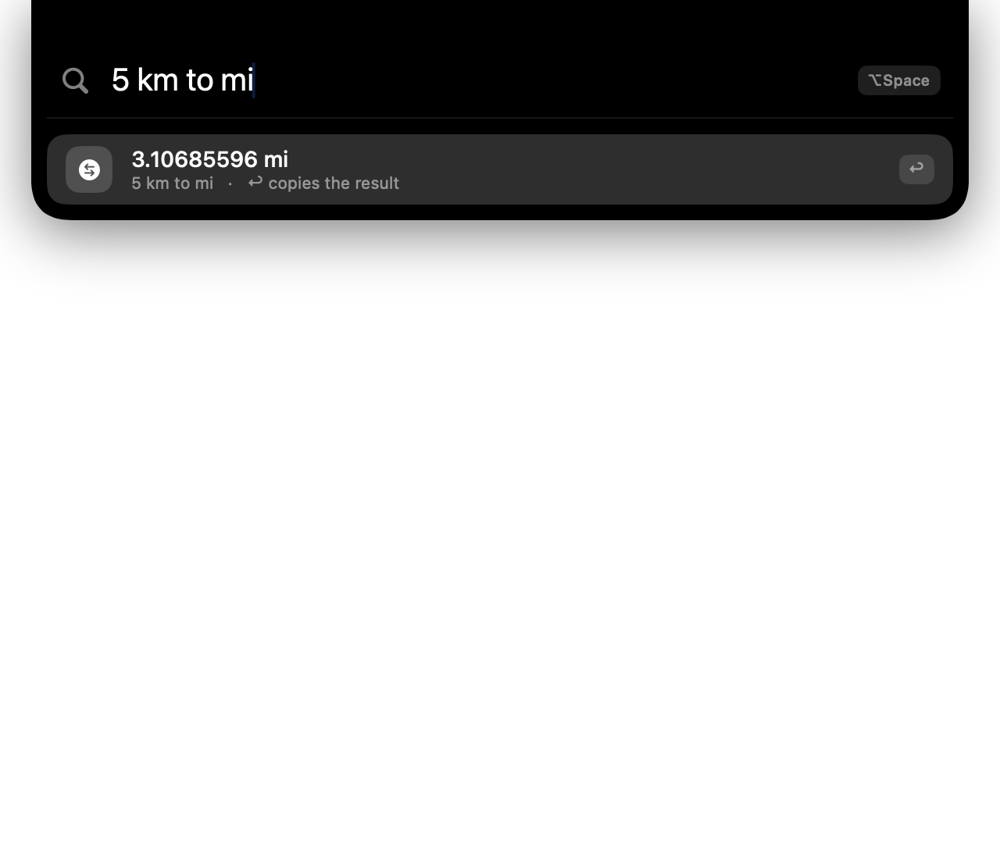

Your notch, now a Dynamic Island.
KramaIsland lives inside your MacBook notch — and every connected monitor — delivering zero-lag AirDrop, native CoreAudio volume, custom project window tiling, universal notifications, media, and instant automatic updates at 120 fps.
Free & MIT licensed · zero telemetry · alerts you automatically when new updates land on GitHub Releases

Latest Release
KramaIsland v1.5.0
Latest Updated November 2026- Automatic Update Alerts & 1-Click Install: Lightweight ETag checks on launch, wake, and every 2 hours pop an interactive Dynamic Island HUD, native Update Alert window, and Menu Bar badge — swapping in place while keeping all macOS permissions.
- Zero-Lag AirDrop & File Shelf: Drag any file, folder, or browser image toward the notch on any display to magnetically open side-by-side AirDrop | File Shelf drop zones with pre-warmed native sharing and O(1) drag-out.
- Multi-Display Dynamic Island: Runs simultaneously across All Displays (MacBook notch + external monitors), Follow Cursor, or any pinned screen with independent hover and full-screen hiding.
- Auto Full-Screen Video Hiding: Automatically hides per-display whenever you play full-screen videos in YouTube, Safari, Chrome, VLC, IINA, or QuickTime while keeping your other displays active.
- 120 fps Zero-Delay Engine: Off-main-thread visibility & downloads watchers, zero pasteboard IPC on mouse moves, diffed settings sync, and tuned 120 Hz spring physics (~0.8% idle CPU).
- Custom Project Grid & Island Resizing: Configure
1–4 × 1–4project window grids (⌃ ⌥ G) and customize the full horizontal & vertical size of the Dynamic Island with Live Preview or direct corner drag.
Live, where you're already looking
Everything that matters right now, right under the notch.
Hover for a glance, click for the full shade, drag a file to AirDrop instantly, or press ⌥ Space to launch anything. One obsidian surface that blends into your bezel and stays out of your way during full-screen video.
Instant AirDrop & File Shelf
NewDrag any file, folder, or web image near the notch to reveal dual AirDrop and File Shelf zones. Pre-warmed native AirDrop launches with zero Finder stall, or park files in the Shade to drag out later or AirDrop all at once.
Multi-Display & Full-Screen Auto-Hide
NewShow KramaIsland on All Displays (MacBook notch + external monitors), follow your cursor, or pin a specific monitor. Playing a full-screen video hides only that display while your other monitors stay live.
Native Volume HUD
NewPowered directly by CoreAudio with hardware key interception so macOS's default volume popup stays hidden. Shows the active speaker or AirPods icon, 120 fps drag scrubbing, click-to-mute, and ⌥ ⇧ fine steps.
Custom Project Grid & Window Snap
NewConfigure custom 1–4 × 1–4 Rows × Columns grids in Settings or the Shade's interactive cell map, plus 1-click 2-split, focus, 3-column, and 4-grid multi-app tiling via ⌃ ⌥ shortcuts.
Universal Notifications & Banner Takeover
Dual-engine capture mirrors alerts from all apps and browsers, automatically closes macOS's original top-right banners, detects 2FA/OTP codes for 1-click Copy, extracts meeting links, and groups history cleanly in the Shade.
Now Playing, from anywhere
Apple Music, TV, Podcasts, QuickTime, IINA, Spotify, VLC, Safari, and every Chromium browser (Chrome, Brave, Edge, Arc, Vivaldi, Opera). Album artwork in the ear, color-matched level bars, scrubber, and instant multi-source switching.
Custom Horizontal & Vertical Size
NewResize the open Dynamic Island horizontally (360–760 pt), vertically (320–860 pt), and tweak compact bar width & thickness in Settings with Live Preview — or drag the Shade's corner handle directly.
Automatic Update Alerts
NewLightweight ETag checks detect new releases with zero rate-limit waste, alert you right in the Dynamic Island and a native Release Notes window, verify the signing certificate so permissions survive, and relaunch automatically.
⌥ Space Command Launcher
Fuzzy app search ranked by frequency, Spotlight file lookup, safe math calculator, unit converter (5 km to mi), clipboard search, AirDrop actions, window tiling, and system commands.
Timer, Calendar & Live Activities
Pomodoro presets with a live ear countdown ring, next meeting with 1-click Join for Zoom/Meet/Teams, charger & low-battery alerts, AirPods L/R/Case battery, active ~/Downloads progress ring, and Shortcuts JSON activities.
Quick Toggles, Mirror & Quiet Mode
Dark Mode, Keep Awake, Wi-Fi, Camera Mirror check, Focus sync, and Quiet Mode (manual, 1-hour timer, or synced with macOS Focus) plus live mic & camera privacy indicators beside the notch.
Private by Design
100% on-device with no accounts, servers, or analytics. Boot-session clipboard history skips password managers and auto-wipes on shutdown. Even update checks can be toggled off into Strict Offline Mode.
One surface, many states
It only grows as much as it needs to.
Idle, the island is just the notch (or a clean resting pill on external monitors). Everything flows out of it with concave shoulders and 120 fps springs, so the notch and whatever drops down always feel like one object.





Install
Up and running in a minute.
KramaIsland is a tiny, zero-dependency Swift app for macOS 13 Ventura or later on Apple silicon — works on both notched MacBooks and external displays.
Download and drag
Open KramaIsland.dmg and drag KramaIsland into Applications. It runs quietly as a menu bar app with no Dock clutter.
Open it the first time
Because KramaIsland is free, open source, and signed with its own stable certificate rather than a paid notarized Developer ID, macOS asks once on first launch. On macOS 15+, click Done → System Settings → Privacy & Security → Open Anyway. On macOS 13–14, right-click → Open. Or run xattr -dr com.apple.quarantine /Applications/KramaIsland.app
Grant what you use
Open Settings → Privacy for one-click permission status and direct links: Accessibility for the hotkey, native Volume & Notification banner replacement, and window tiling; Full Disk Access for Notification history; Calendar and Camera on demand.
Automatic update alerts
That is your last manual download. KramaIsland checks GitHub Releases automatically via ETag, alerts you in the Dynamic Island and an Update Alert window with What's New notes, and installs signature-verified updates in place — keeping every macOS permission intact.
Open source
Swift, SwiftUI and nothing else.
One Swift package, zero third-party dependencies, MIT licensed. Clone it, inspect every line, build it yourself, or publish signed releases with one command.
# run from source git clone https://github.com/Seavik2142/KramaIsland.git cd KramaIsland swift run # build a signed .app and .dmg scripts/make-dmg.sh 1.5.0
About the maker
Built by Mao Seavik.
KramaIsland started with a simple idea: the notch already takes up space on every MacBook, so it should work for you — smoothly, privately, and across all your screens.

Mao Seavik
Creator and maintainer of KramaIsland
If KramaIsland makes your MacBook feel faster and cleaner, star the repo or say hello. Found a bug or want a feature? Open an issue on GitHub.